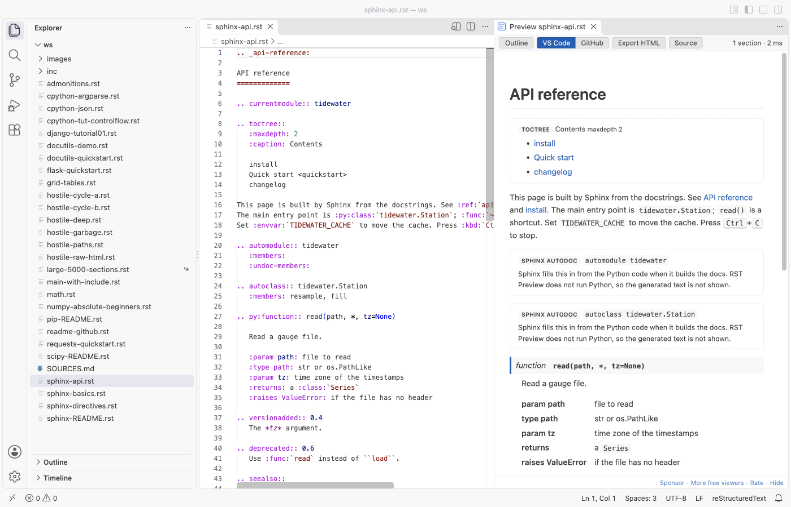
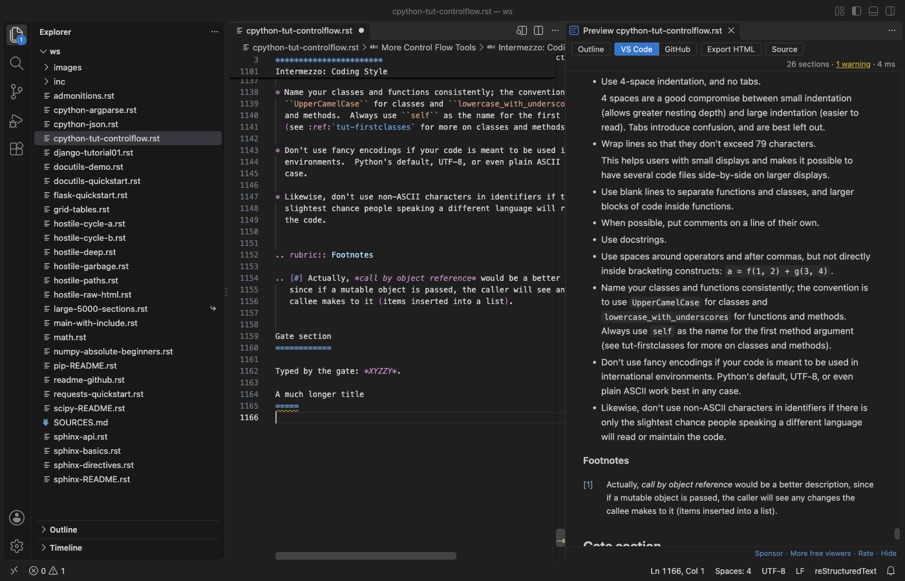
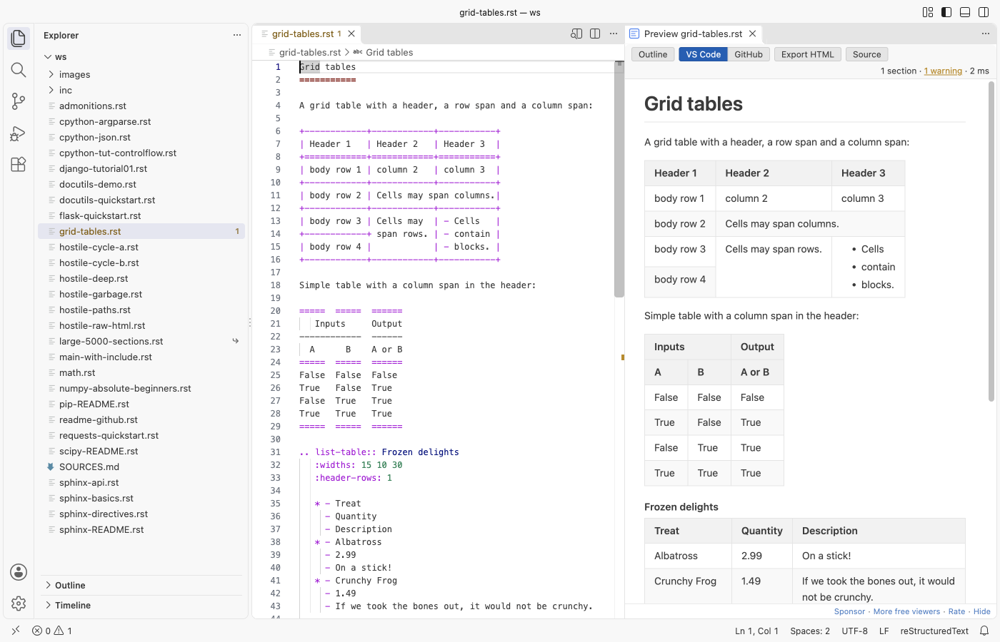
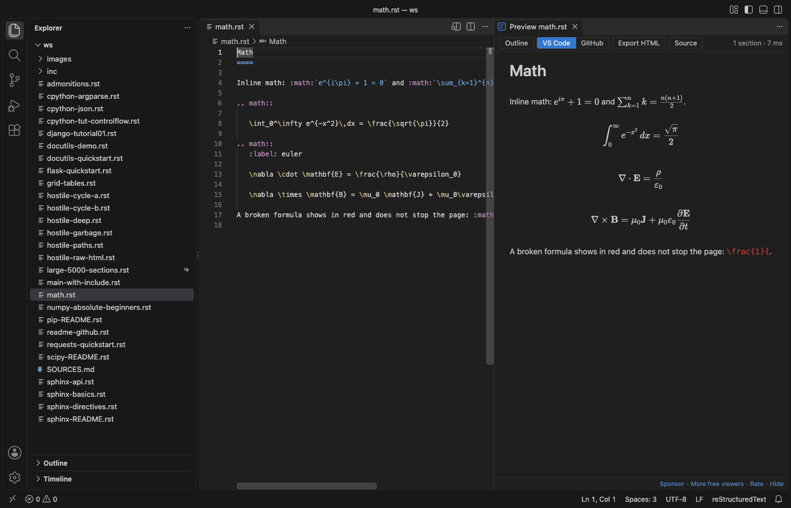
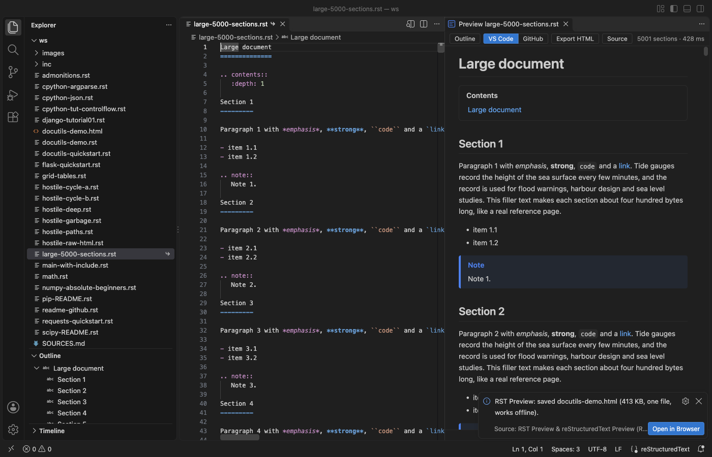
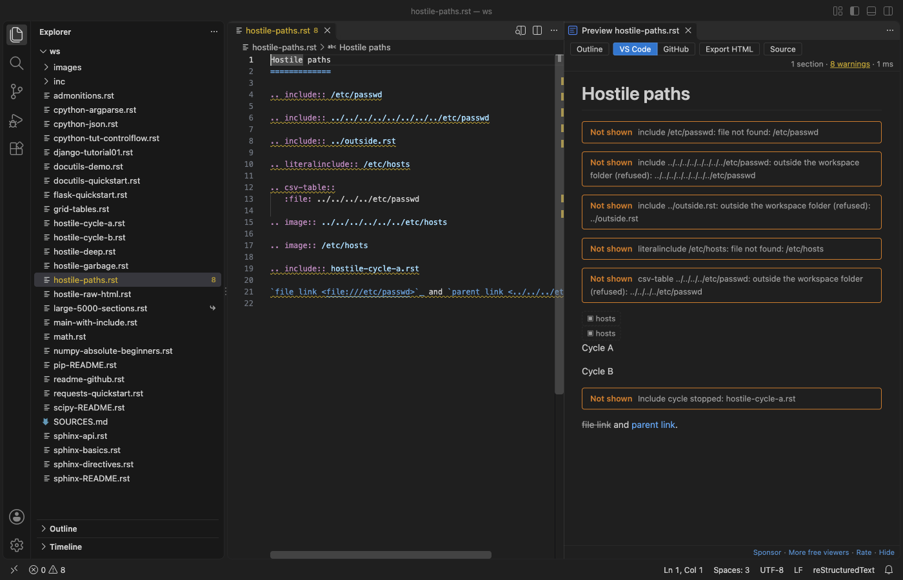

RST Preview & reStructuredText Preview (RST Viewer, No Python)
RST Preview & reStructuredText Preview (RST Viewer, No Python), a VS Code extension by Zovo
Open a .rst file and see it rendered beside the editor, as you type. No Python, no Sphinx, no docutils, no conf.py. Free, no sign-in, works offline.
Free, MIT license. Needs VS Code 1.90.0 or newer. Extension ID zovo.zovo-rst-preview, version 0.1.0.

Questions people ask
Is RST Preview & reStructuredText Preview (RST Viewer, No Python) free?
Yes. RST Preview & reStructuredText Preview (RST Viewer, No Python) is free and MIT licensed.
How do I install RST Preview & reStructuredText Preview (RST Viewer, No Python)?
Click "Install in VS Code" above, or search for zovo.zovo-rst-preview in the Extensions view.
Why this preview
- It opens with no setup. Other RST previews need Python with docutils or a full Sphinx project, and fail with an empty window when Python is missing or installed in a path with a space. RST Preview renders reStructuredText itself, inside VS Code.
- Lists, tables and directives look right: bullets, numbered lists (1, a, i, I), definition, field and option lists, grid tables with row and column spans, simple tables,
csv-tableandlist-table, admonitions, footnotes, citations and substitutions. - Sphinx files do not break it.
toctree,automoduleand other Sphinx directives show as labelled boxes, and roles such as:ref:,:doc:and:py:func:show as links or code, never as an error page.

What it does
- Live preview that updates while you type and scrolls with the editor (both ways). Double-click the preview to jump to that line.
- Problems panel: a title underline that is too short, a link to a missing target, a broken table. The preview keeps the last good render when something goes wrong.
- Code blocks in color (
code-block,sourcecode,literalinclude, doctest), with:linenos:,:emphasize-lines:and:caption:. - Math with KaTeX: the
mathdirective and the:math:role. - Local pictures (
image,figure,|name| image::),includeof local files,contents,sectnum,topic,sidebar,rubric,epigraph,parsed-literal,line-block,raw:: html(cleaned: no scripts, no event handlers). - Outline: the sections of the file in a side list, in the VS Code Outline view and in the breadcrumbs.
- Two looks: the colors of your VS Code theme, or the GitHub README look (light and dark).
- Export HTML: one file with the pictures, math fonts and code colors inside. It opens in any browser with no network.



How to use
- Open a
.rstfile. - Click the preview button at the top right of the editor, or press
Ctrl+K V(Cmd+K Von a Mac).Ctrl+Shift+Vopens the preview in place of the editor. - Use the Outline, VS Code / GitHub, Export HTML and Source buttons in the preview toolbar.
Large files and safety
- Files up to 20 MB render at once (setting
rstPreview.maxFileMB). A larger file shows a message and a Render anyway button instead of a frozen window. Only the changed parts of the page are redrawn while you type. - The preview loads nothing from the network: remote pictures (for example badges) show as a small label. Links open in your browser only when you click them.
include,literalinclude,csv-table :file:and pictures are read only from inside your workspace folder. A path such as/etc/passwdor../../..is refused, include cycles stop, and nesting stops after 5 levels.


Settings
| Setting | Default | What it does |
|---|---|---|
rstPreview.style | vscode | vscode or github look |
rstPreview.scrollSync | true | Scroll the preview and the editor together |
rstPreview.updateDelayMs | 250 | Wait after typing before the preview renders again |
rstPreview.maxFileMB | 20 | Largest file that renders at once |
rstPreview.problems | warnings | warnings, all or off for the Problems panel |
rstPreview.fontSize | 0 | Font size in pixels (0 = 14 px) |
rstPreview.askForRating | true | One rating request after a few days of use |
rstPreview.showSupportLinks | true | Small Sponsor and More free viewers links at the bottom |
Limits
- RST Preview is not Sphinx. It does not run
conf.py, extensions or autodoc, so text that Sphinx makes from Python code is not shown, and:ref:to a label in another file shows as plain text. rawcontent other than HTML (LaTeX and so on) is not shown.:file:and:url:options ofrawandcsv-table :url:are not read.- Some rare docutils features are missing:
headerandfooter, the special layout of bibliographic fields (:Address:and others show as a plain field list), and custom roles beyond.. role::with a class.
Install RST Preview & reStructuredText Preview (RST Viewer, No Python)
Click the button to open VS Code and install it, or press Ctrl+P (Cmd+P on macOS) in VS Code and run ext install zovo.zovo-rst-preview.
Free, MIT license. Needs VS Code 1.90.0 or newer. Extension ID zovo.zovo-rst-preview, version 0.1.0.
Source code and issues are on GitHub.
Support this work
If this extension saves you time, you can support the work on GitHub Sponsors. Monthly tiers start at $5, and one-time tiers start at $15. Sponsorship is optional, and the tool works the same without it.